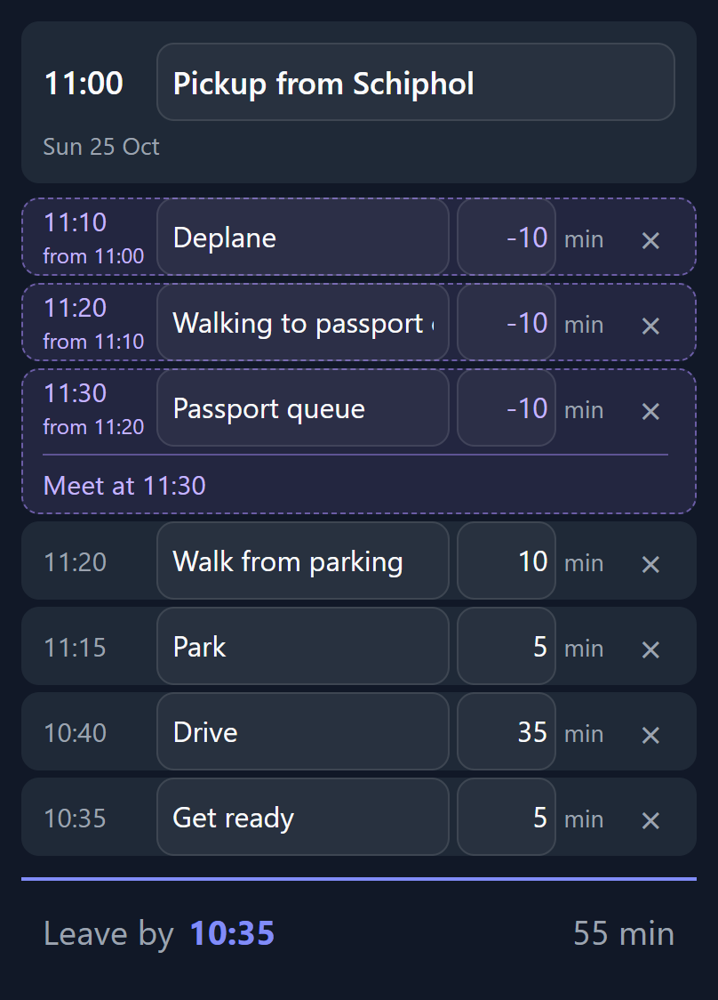
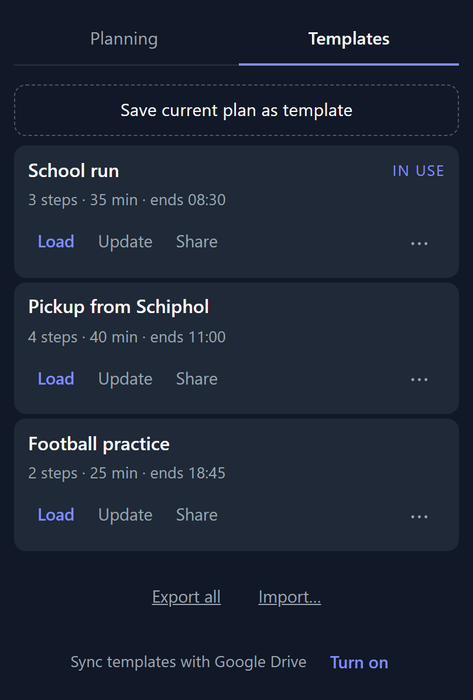
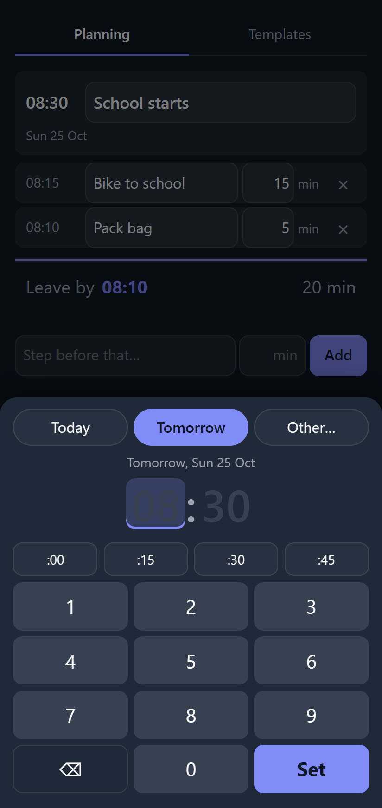
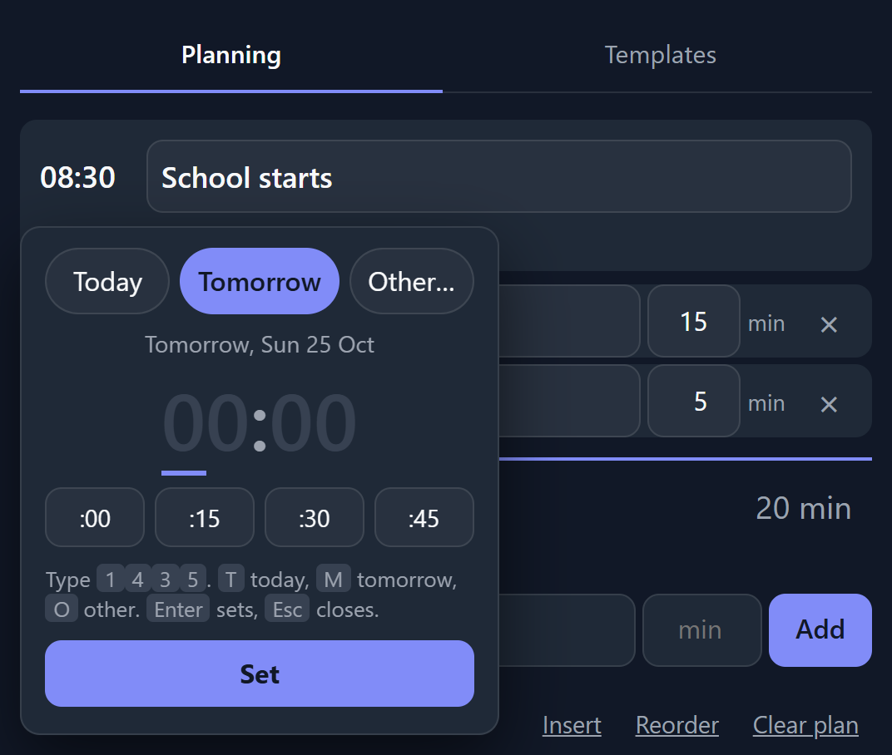
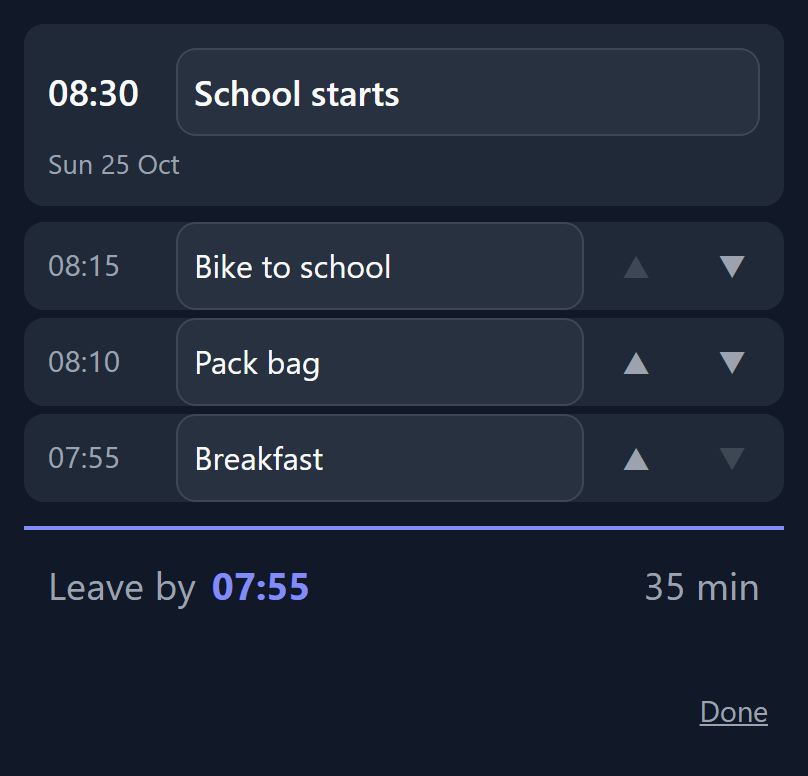
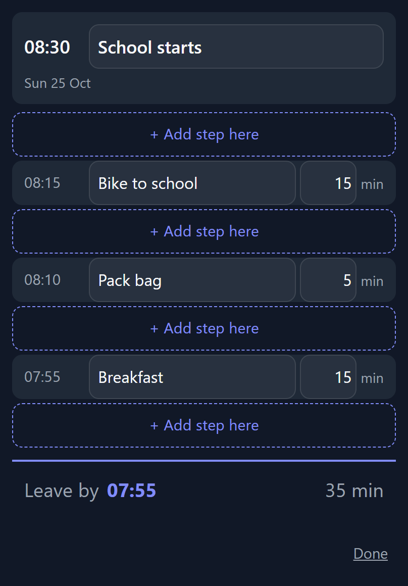

Release notes
Backwards Planner works out when you have to leave. You set the deadline, add what has to happen before it, and it counts back. New features are listed here, newest first.
Negative steps for someone else’s time
Picking someone up? Their plane lands at 11:00, but they still have to get off and through passport control. Enter those steps with negative minutes, like −10. Their steps run forward to a meet time, and your own steps count back from there.

Their steps are dashed and purple and always stay on top, so you never confuse them with yours. Each one shows when it ends and when it started. The total next to “Leave by” counts only your own time.
Template sync with Google Drive
Save “School run” on your phone and it shows up on your laptop. Tap Turn on at the bottom of the Templates tab and sign in with Google. Changes go across about three seconds after you make them.

- The app only sees its own hidden folder in your Google Drive, nothing else.
- While sync is off, the app does not contact Google at all.
- Two different templates with the same name? It asks which one to keep.
- On iPhone, use it in a Safari tab. The home-screen app can’t do the Google sign-in.
New deadline picker
Tap the time and a picker opens. Choose Today, Tomorrow or another day, then type the time: four digits and you’re done. On a phone you get a keypad; on a computer you just type.


- Start with an empty plan and the picker opens by itself.
- On a computer, Enter walks you through the whole plan without the mouse:
Reorder and insert steps
Two new buttons under the plan. Reorder swaps the minutes for arrows so you can move steps up and down. Insert opens a slot between the steps, so you can add one in the middle instead of only at the end. Tap Done when you’re finished.


- Templates remember the timeLoading “School run” sets 08:30 again. It only asks about the deadline when you reload the template you already have open.
- Template names fill themselves inSaving a plan suggests the plan’s name, so “Dentist” stays “Dentist”.
- “What’s new” in the appAt the bottom of the app, “What’s new” opens these notes. A purple dot next to it means there is something you haven’t seen yet.
- The installed app updates itselfIf you added it to your home screen, it now picks up new versions on its own.
Try it
Free, no account, works offline. On Android, open it in Chrome and choose Add to Home screen.
Open Backwards Planner vandenwoody.github.io/vibe-backwards-planner